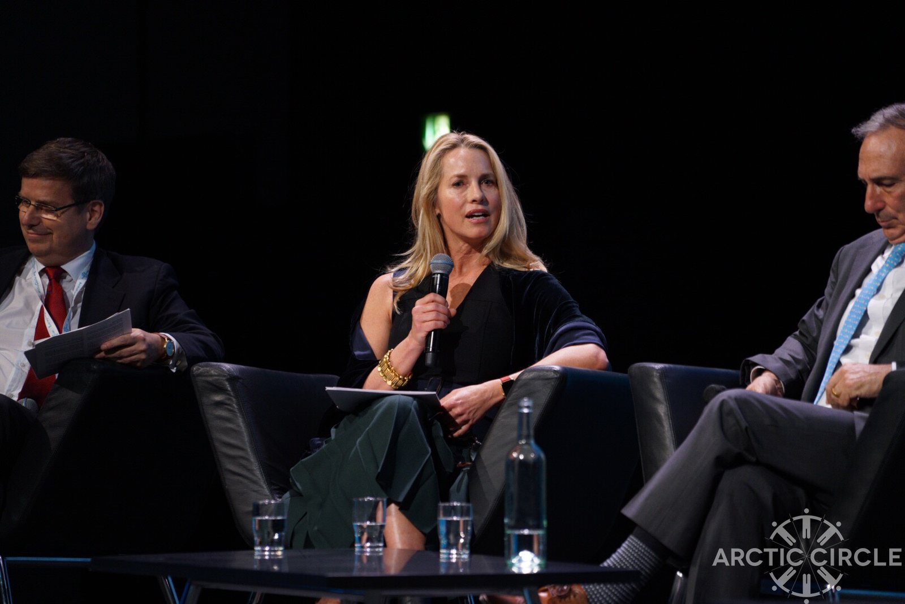

Epstein Sought Laurene Powell Jobs’ Email in 2015 When ‘Her Boat’ Was Next to His Island
A swimsuit photo said to show The Atlantic’s owner with Ghislaine Maxwell has spread for five years without a source, while Epstein’s own emails, released by the Justice Department, show him hunting for Laurene Powell Jobs’ address and getting her name wrong.

On Nov. 30, 2015, seven years after his guilty plea in Florida, Jeffrey Epstein sent a one-line email to Boris Nikolic, a former science adviser to Bill Gates: “do you have laura jobs email. ?” Nikolic asked whether he meant Laurene Powell Jobs, now the majority owner of The Atlantic, and minutes later sent her address. Epstein confirmed that he did, then explained his interest in a single line: “thanks her boat is next to my isalnd,” according to emails the Justice Department released in its Epstein Library. Those records, not the unsourced photo that has followed Powell Jobs online since 2021, are the only documented link between her and Epstein’s world that this investigation found.
The photo returned to wide circulation on the night of Oct. 23, 2024, when Sean Davis, co-founder and chief executive of The Federalist, posted it on X. It shows two women in swimsuits laughing on an outdoor sofa. Davis wrote that it showed “the current owner of The Atlantic casually lounging with Jeffrey Epstein’s madam.” The post has drawn more than 50 million views. It gave no photographer, date or location, and none has emerged since.
Two parts of the post hold up. Emerson Collective, the organization Powell Jobs founded, agreed in July 2017 to buy a majority stake in The Atlantic, with David Bradley keeping a minority share; Powell Jobs called it “a privilege” to “become a steward of The Atlantic,” Education Week reported. And Maxwell, the woman the post places on the right, was found guilty on Dec. 29, 2021, of five federal counts, including sex trafficking of a minor, and sentenced to 20 years.
The identification of the woman in white is another matter. A reverse-image search found no copy older than Nov. 18, 2021, when it appeared on Reddit. It spread on X in December 2021, during Maxwell’s trial, after The Atlantic promoted an article on child-trafficking panics. “Yesterday The Atlantic put out an article claiming child trafficking was a ‘fake’ epidemic!” one widely shared post said on Dec. 10, 2021, above the photo.
The pattern has repeated since. On Feb. 7, 2026, commentator Steve Guest asked on X: “When was this photo of Laurene Powell Jobs and Ghislaine taken — and where?” On Sept. 22, 2026, journalist Alan MacLeod posted it again in reply to The Atlantic. None of them supplied a source.
At least one newspaper published the image as fact, then withdrew it. On Oct. 25, 2024, a Toronto Sun column ran the photo with the caption “Convicted sex trafficker Ghislaine Maxwell, right, was back in the news via Kamala Harris backer Laurene Powell Jobs,” and wrote that photos had “emerged of the pair lounging in their bikinis,” an archived copy shows. The live article, marked “Last updated Apr 11, 2025,” contains neither the photo nor the passage, and carries no correction notice.
A second image shows how easily the identification slips. An April 2026 post on X paired the swimsuit photo with an indoor picture of a blonde woman beside Maxwell, presenting both as Powell Jobs. The indoor picture is a Getty Images photograph by Frazer Harrison that Fox News captioned “Lady Victoria Hervey (left) and Ghislaine Maxwell at a launch party circa 2004 in Hollywood, California.” The Toronto Sun ran the same picture in 2025 captioned as Hervey and Maxwell. Hervey, a British socialite, is not Powell Jobs. That does not establish who the woman in the swimsuit photo is; nothing we found does.
The Justice Department’s Epstein Library, released under the Epstein Files Transparency Act, offers firmer ground. A search for “Laurene” returns 26 results. The core is one thread. On the morning of Nov. 30, 2015, Epstein asked Nikolic for “laura jobs” email. “Are you referring to Laurene Powell Jobs - an ex-wife of Steve Jobs? Never heard that anyone calls her Laura so just double checking,” Nikolic answered, mistakenly describing as an “ex-wife” the woman Steve Jobs left widowed in 2011. Four minutes later he sent the address, redacted in the release. Epstein replied “yes,” the thread shows, and then wrote back about her boat. Nikolic, who once served as chief adviser for science and technology to Gates, said in 2019 that he was “shocked” to learn Epstein had named him in his will.
Two undated drafts of a letter in the files, one addressed to “Laurene” and the other to “Ms. Jobs,” fill in the purpose. “Sorry if my noisy heli arrival yesterday disturbed your otherwise serene afternoon,” the letter begins. It says Joi Ito of the MIT Media Lab had told Epstein about her “personal project - a school for the highly gifted,” calls her his temporary “next door neighbor” and invites her “over for coffee or tea either today or tomorrow.” On Dec. 1, 2015, Epstein sent an email addressed to Ito and Powell Jobs; the released copy shows no body. That the letter was its text is an inference from timing and content, not a documented fact. The next day, when a staff member asked whether “Ms. Jobs yacht” was back at Christmas Cove, Epstein answered: “Wrong boat.”
That is where the record stops. We found no reply from Powell Jobs, no record of a meeting and no document in the library that names both her and Maxwell, though the department’s search page warns that portions of the files “may produce unreliable search results.” We found no public statement by Powell Jobs, Emerson Collective or Maxwell about the photo, and none by Powell Jobs or Ito about the 2015 emails.
The point
What we found: the photo at the center of the post has never been sourced, the one newspaper that printed it as Powell Jobs pulled it without explanation, and a second picture sold as proof shows Lady Victoria Hervey. The documented record points the other way. In November 2015, seven years after his guilty plea, Epstein did not have Laurene Powell Jobs’ email address, called her “laura,” needed a former Gates adviser to get it and reached out because her boat had appeared beside his island. The released files hold no answer from her.
Why it matters
A single image, viewed tens of millions of times, has become shorthand for a relationship between a major publisher and a convicted sex trafficker, and it is deployed whenever that publisher’s journalism draws fire. The Justice Department’s own files now let readers test such claims against the record. Here the record shows what Epstein wanted, how little access he had and how quickly he tried to use a chance proximity. Readers can judge the photo, and the people sharing it, by the same standard.
The questions
- Who took the swimsuit photo, when and where, and why has no one who shares it ever produced the original?
- Did Laurene Powell Jobs or her staff ever answer Epstein’s email of Dec. 1, 2015, or his invitation to coffee?
- What did Joi Ito tell Epstein about Powell Jobs’ school project, and did he know Epstein would use it to approach her?
- Why did the Toronto Sun remove the photo and its Powell Jobs passage without telling readers?
- How many other names in the Epstein Library appear only because Epstein was trying, and perhaps failing, to reach them?
Sources
- EFTA02478958: Email exchange between Jeffrey Epstein and Boris Nikolic, Nov. 30, 2015 U.S. Department of Justice, Epstein Library (Data Set 11)
- EFTA02479138: Epstein’s reply to Boris Nikolic, Nov. 30, 2015 U.S. Department of Justice, Epstein Library (Data Set 11)
- EFTA01732123: Email from Jeffrey Epstein to Joi Ito and Laurene Powell Jobs, Dec. 1, 2015 U.S. Department of Justice, Epstein Library (Data Set 10)
- EFTA01131070: Undated draft letter from Epstein addressed “Laurene,” U.S. Department of Justice, Epstein Library (Data Set 9)
- EFTA02478605: Epstein’s reply to a staff email headed “Ms. Jobs,” Dec. 2, 2015 U.S. Department of Justice, Epstein Library (Data Set 11)
- Search Full Epstein Library (searches for “Laurene,” “Powell Jobs,” “laura jobs” and Maxwell with Powell Jobs) U.S. Department of Justice
- HUNTER: Female Sudbury killer will be forgotten line item of murder (as published Oct. 25, 2024; Internet Archive capture of Nov. 8, 2024) Toronto Sun (Brad Hunter), archived by the Internet Archive
- HUNTER: Female Sudbury killer will be forgotten line item of murder (live version, without the photo or the Powell Jobs passage) Toronto Sun (Brad Hunter)
- Post on X pairing the Getty photo of Lady Victoria Hervey with the swimsuit photo, captioned as Powell Jobs X
- Post on X sharing the swimsuit photo after The Atlantic’s child-trafficking article X (@Lukewearechange)
- Post on X by Steve Guest X (Steve Guest)
- Post on X by Alan MacLeod X (Alan MacLeod)
- Ghislaine Maxwell Sentenced To 20 Years In Prison For Conspiring With Jeffrey Epstein To Sexually Abuse Minors U.S. Attorney’s Office, Southern District of New York
- Post on X by Sean Davis X (Sean Davis)
- Who is Boris Nikolic? Epstein-named executor is former Bill Gates adviser Fox Business
- Prince Andrew’s ex Lady Victoria Hervey compares Ghislaine Maxwell, Jeffrey Epstein to ‘Batman and Robin’: doc Fox News (Stephanie Nolasco)
- What’s going on with Prince Andrew sex accuser Virginia Giuffre? Toronto Sun (Brad Hunter), via Yahoo News Canada
- Laurene Powell Jobs’ Emerson Collective is buying a majority stake in The Atlantic TechCrunch (Anthony Ha)
- Education-Focused Emerson Collective to Acquire Majority Stake in The Atlantic Education Week (Mark Walsh)